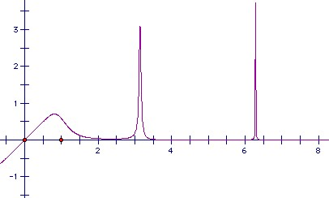

Let f(x) = x/(1 + x6sin2x). Sketch the curve y = f(x) and show that ∫0∞ f(x) dx exists.
Solution

Obviously f(x) is positive for positive x. But it has an infinite number of spikes at x = nπ. The spike at nπ is height nπ, so we have to show that the integral is bounded above.
We have sin x > ½x near x = 0 (certainly for x < π/3). So |sin x| > 1/(nπ)k except possibly for |x| < 2/(nπ)k. Let In be the interval centered on nπ width 4/(nπ)k. For x ∈ In we have f(x) < 2nπ, so the integral of f(x) over the interval is less than 8/(nπ)k-1. The total integral over all such intervals is bounded provided that k > 2. Outside such intervals, x6 sin2x > ½ x6/x2k, so f(x) < 2/x2k-5. Hence the interval of f(x) over 0 to ∞ excluding the intervals In is bounded provided k > 5/2. By taking k = 2 1/4, for example, we get that the whole integral is bounded.

© John Scholes
jscholes@kalva.demon.co.uk
5 Mar 2002